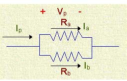

- A resistance having rating 10 ohms, 10 W is likely to be a
The total electric current flowing through this resistance is 1 Amp and it is very low resistance. It has very high power rating. The wire wound resistors can be produced very accurate, and have excellent properties for low resistance values and high power ratings. Because the wire wound resistors are made up of an alloy such as nickel-chromium (nichrome) or a copper-nickel-manganese alloy called Manganin. This is having very good capability to dissipate the heat which is produced by the electric current flowing through the material (resistor).
- The rating of fuse wire is always expressed in
The electric current flowing through the fuse wire is same as the load current which is consumed by the electrical load. That load current only decides the rating of the fuse. Hence, the rating of the fuse is expressed in Amps.
- Three identical resistors are first connected in parallel and then in series. The resultant resistance of the first combination to the second will be
If we connect three identical resistors, R in parallel, then the equivalent resistance is [ R / 3]. If we add that three [ R ] resistances in series, then the equivalent resistance is [ 3R ]. Now the resultant resistance of the first combination to the second will be [ R / 3 ] / 3R = [ 1 / 9].
- Which of following materials has the least resistivity ?
It is a transition metal on the periodic table (atomic number 29) with a reddish- brown color body. It resists corrosion and is a good conductor and has a high conductivity when it comes to electricity. Hence, it has the least resistivity.
- Which resistor will be physically larger in size ?
The power consumption of 10 Ω, 50 W resistor is high. If the power consumption is high, then the physical dimensions are also high.
- When resistance element of a heater fuses and then we reconnect it after removing a portion of it, the power of heater will
If we remove a portion of resistance in that initial resistance, then the electric current resistance value will be decreased. This leads to flow more electric current than the previous case. Hence, according to the power equation (P = VI), if electric current increases then the power of the heater also increases.
- When electric current flows through heater coil it glows but supply wiring does not glow because
Heater coil is made up of alloys such as Manganin wire, and it is having high melting point. Also it has high resistance. Due to the high resistance, more heat will be generated. Hence, it will glow. But, the heater wire does not glow because it is having less resistance than the heater coil.
- Two resistor are said to be connected in parallel when
If we connect two resistors in parallel, then the voltage is same across the two resistors. But, electric current will divide into two paths. The electric current flow through the two parallel connected resistors is shown in below figure.
 - The maximum electric current rating for a 10 kΩ, 0.5 W resistor is
We know that the expression of Power P = I2R. Now, I2 = P / R = 0.5 / 10000= 5.0 × 10-5.
- The electrical resistance of human body is around
The electrical resistance of the human body is how much electricity a human body can handle. The electrical resistance of the human wet body is 1,000 ohms.
- You have to replace 1500 Ω resistor in radio. You have no 1500 Ω resistor but have several 1000 Ω ones which you would connect
If we connect two 1000Ω resistors in parallel, then the total resistance is the 500 Ω. Now, if we connect this parallel combination of two 1000 Ω resistance in series with another 1000 Ω resistance, then the total resistance is 1500 Ω. Hence, we need three 1000 Ω resistors with the connection of two in parallel and one in series.
- A 3 Ω resistor having 2 A electric current will dissipate the power of
The expression for power dissipation is P = I2R. Hence, P = 22 × 3 = 4 × 3 = 12 W.
- Two resistances R1 and R2 are connected in series across the voltage source where R1 > R2. The largest drop will be across
In series connection, the electric current flow through the two resistors is same. We know that the voltage drop by the resistor V = IR. Hence, the drop by the resistance R1 is V1 = IR1 and the drop by the resistance R2 is V2 = IR2. If the resistance R1 > R2, then the largest drop should be across the resistance R1.
- Which of the following quantities remain the same in all parts of a parallel circuit
A sample resistance based parallel circuit is given below. If we apply a voltage to this circuit, the electric current can be divided into two paths. Current can change with respect to the change in resistance. Due to this, power can also change. Hence, in parallel circuit, the voltage will be same at all the conditions.
- The filament of an electric bulb is made of
Tungsten has the highest melting point than all other metals. That is why we used to make the filament by using tungsten metal than other metals.
- Three 60 W bulbs are in parallel across the 60 V power line. If one bulb burns open
First of all, we need to know one thing that the voltage is same in parallel circuit. So, if any one of the load is disconnected or failed, then the remaining loads are still connected with the power supply. So, that loads can work. This same principle can apply in this question also. Hence, the remaining other two bulbs can glow.
- A electric current of 1 mA flows through a 1 Mohm, 2 W carbon resistor. The power dissipated as heat in the resistor will be
The power dissipated across the resistance is P = I2R = (1 × 10-3) 2 × 1 × 106 = 1 × 10-6 × 1 × 106 = 1 Watt. The power dissipated as heat in the resistor is 1 Watt.
- When checked with an ohm meter an open resistor reads
Open resistance means that the resistance of air gap. The air gap resistance is obviously infinite. Hence, if we use an ohm meter to measure the open resistor, then it reads infinite.
- Which of the following carbon coded resistor has value of 10 kohm with 20% tolerance ?
Under Construction
- Which of the following are typical resistance and power-dissipation values for a carbon- composition resistor ?
Carbon composition resistors consist of a solid cylindrical resistive element with embedded wire leads or metal end caps to which the lead wires are attached. Hence, the wire leads might have a range of mega ohms and the size is small which leads to carry less power dissipation. So, 1000000 ohms, 1 Watt is the normal rating of carbon composition resistor.
Design with  by SARU TECH
by SARU TECH
www.sarutech.com
Content Credited to electrical4u.com
Online Electrical Engineering Study Site